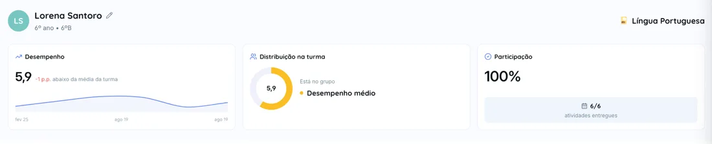
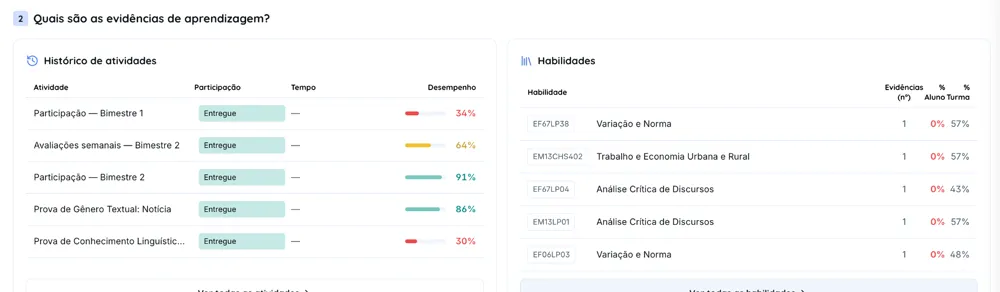

Aqui, a tecnologia trabalha para o seu filho.
A Escola Demo funciona sobre um único sistema com inteligência artificial. O mesmo que o professor usa para preparar a aula, que o seu filho usa para estudar, e que traz a nota e a presença até você.

Tudo o que acontece na escola, ligado no mesmo lugar.
A aula que o professor prepara gera o dado que vira o estudo do seu filho — e chega até você já corrigido. Nada é digitado duas vezes, nada se perde entre uma ferramenta e outra.


Propostas específicas para alunos que estão

Diagnóstico individual, com

Práticas guiadas com
Um mesmo conteúdo. Muitas maneiras de aprender.
Cada aluno aprende de um jeito. O que foi dado em sala se transforma nos formatos que fazem sentido para cada aula e para cada aluno — e o seu filho escolhe por onde começar.


A família acompanha de perto o desenvolvimento.
Não só a nota final, mas o que o aluno já aprendeu ao longo do caminho.
As dificuldades aparecem por habilidade e conteúdo, não como um número solto.
Atividades, revisões e intervenções ficam visíveis em tempo real.

A adaptação acompanha o aluno, não a atividade.
O perfil de cada estudante fica salvo na plataforma, respeitando as especificidades do laudo. A partir daí toda prova e toda atividade já saem adaptadas, sem depender de alguém refazer o material caso a caso.
Inteligência artificial que ensina — e não entrega a resposta.
A dúvida de toda família quando ouve que a escola usa IA é se o filho vai aprender ou vai colar. Aqui o tutor devolve a pergunta, a prova online tem trava, e você vê o que ele fez na plataforma.
| Quando | O que fez |
|---|---|
| Ter · 19h40 | Plano de estudo de Ciências |
| Qua · 20h15 | 12 exercícios de Matemática |
| Qui · 18h05 | Revisão com o tutor |
A organização que você sente sem ver.
O mesmo sistema cuida da matrícula, do horário e da enturmação. É por isso que o ano começa pronto no primeiro dia e a secretaria te responde na hora.
Contato feito
Família BarbosaInfantil
Família Dias7º ano
Visita agendada
Família Araújo1º ano · 27/08
Matriculado
Família MonteiroInfantil ✓
A tecnologia é o professor. O Sistema IA é Teachy.
Tecnologia personalizada para a Escola Demo, para uma educação humana, cidadã e voltada para o futuro.

Criada por brasileiros em Stanford Premiada internacionalmente 100% alinhada à BNCCVenha conhecer a Escola Demo por dentro.
Fale com a nossa equipe de matrículas. A gente tira suas dúvidas e agenda uma visita para você ver tudo isso funcionando.